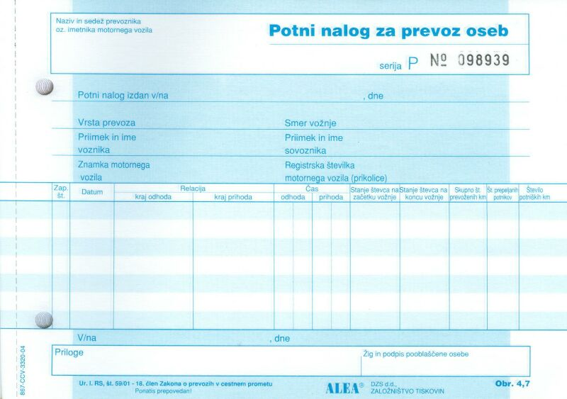
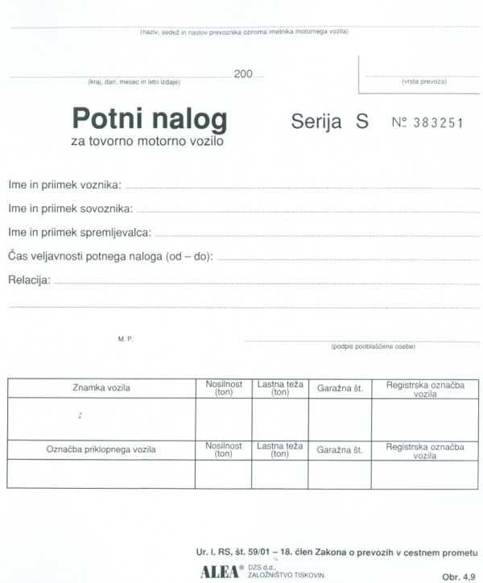

|
Delovno navodilo je podroben opis sestavljenega opravila ali sestavljene delovne naloge, ki jo mora za to doloèeni èlan organizacije izvesti. Sestavljena opravila in naloge so tiste naloge, ki zahtevajo za njihovo izvršitev veè korakov ali opravkov. Taki podrobni opisi dela ali naloge so še posebej potrebni, èe gre za naloge, ki se izvajajo obèasno, so zapletene, sestavljene iz mnogo korakov ali pa so povezane z uporabo zahtevne tehnologije. Delovno navodilo je pregledno in uèinkovito, èe je strukturirano. To pomeni, da je struktura navodila jasno razvidna. Struktura je zgradba navodila. Najlažje dosežemo strukturirano obliko delovnega navodila tako, da posamezne korake sestavljenega opravila ali naloge zapišemo v vrsti po toèkah ali alineah. Vrstni red posameznih korakov (toèk ali alinej) mora biti enak dejanskemu zaporedju izvajanja korakov te naloge. Gre torej za nekakšen program ali algoritem. Algoritem je konèno, urejeno in vedno enako zaporedje korakov, ki privedejo do izvršitve oziroma rešitve neke zapletene naloge. V posameznih primerih mora doloèen èlan organizacije iz razliènih razlogov odpotovati v drug kraj. Primer bi bil lahko tudi organizacija obiska Tehniènega muzeja Slovenije v Bistri pri Vrhniki. Denimo, da želi uèitelj v programu "Raèunalnikar" organizirati za dijake tega programa obisk omenjenega muzeja. Èe želi organizirati prevoz z enim od vozil v lasti ZUIM, mora v tajništvu te organizacije zaprositi za potni nalog. Potni nalog je torej dokument, s katerim zabeležimo vse pomembne podatke v zvezi s prevozom oseb ali blaga. Na razpolago imamo torej dva splošna obrazca za potni nalog: 1. Potni nalog za tovorno motorno vozilo in 2. Potni nalog za prevoz oseb. Primer: Dne 12.12.2007 je ob 7.45 izpred ZUIM Kamnik na pot proti Bistri pri Vrhniki krenilo vozilo znamke Renault Master z registrsko oznako "LJ - ZUIM 4". Na ogled Tehniškega muzeja je peljalo dijake prvega letnika programa "Raèunalnikar". Vozilo je upravljal Slavko Kobetiè, spremljevalni uèitelj je bil Dušan Èeferin. V Bistro so prispeli ob 8.35. Bistra je oddaljena od Kamnika približno 65 km. Ogled muzeja so konèali ob 12.00. Takoj po ogledu so krenili domov. Pred ZUIM so prispeli ob 13.15. Stanje števca na zaèetku vožnje je bilo 184.432 km.  Slika 1: Splošni obrazec za potni nalog.  Slika 2: Splošni obrazec za potni nalog. 1. Vprašanja za usmerjanje pozornosti in usvajanje novih besed: 1. Kaj je delovno navodilo? 2. Kdaj je delovno navodilo še posebej potrebno? 3. Kako lahko dosežemo strukturirano obliko delovnega navodila? 4. Kako se imenuje obrazec, s katerim zabeležimo vse pomembne podatke v zvezi s prevozom oseb ali blaga? 5. Kaj vpišemo v "Potni nalog za prevoz oseb" v polje "Potni nalog izdan v/na" za primer v tej uèni enoti? 6. Kaj vpišemo v "Potni nalog za prevoz oseb" v polje ",dne" za primer v tej uèni enoti? 7. Kaj vpišemo v "Potni nalog za prevoz oseb" v polje "Vrsta prevoza" za primer v tej uèni enoti? 8. Kaj vpišemo v "Potni nalog za prevoz oseb" v polje "Smer vožnje" za primer v tej uèni enoti? 9. Kaj vpišemo v "Potni nalog za prevoz oseb" v polje "Priimek in ime voznika" za primer v tej uèni enoti? 10. Kaj vpišemo v "Potni nalog za prevoz oseb" v polje "Priimek in ime sovoznika" za primer v tej uèni enoti? 11. Kaj vpišemo v "Potni nalog za prevoz oseb" v polje "Znamka motornega vozila" za primer v tej uèni enoti? 12. Kaj vpišemo v "Potni nalog za prevoz oseb" v polje "Registrska številka motornega vozila (prikolice)" za primer v tej uèni enoti? 13. Kaj vpišemo v "Potni nalog za prevoz oseb" v polje "Zap. št." za primer v tej uèni enoti? 14. Kaj vpišemo v "Potni nalog za prevoz oseb" v polje "Datum" za primer v tej uèni enoti? 15. Kaj vpišemo v "Potni nalog za prevoz oseb" v polje "Relacija/kraj odhoda" za primer v tej uèni enoti? 16. Kaj vpišemo v "Potni nalog za prevoz oseb" v polje "Relacija/kraj prihoda" za primer v tej uèni enoti? 17. Kaj vpišemo v "Potni nalog za prevoz oseb" v polje "Èas odhoda" za primer v tej uèni enoti? 18. Kaj vpišemo v "Potni nalog za prevoz oseb" v polje "Èas prihoda" za primer v tej uèni enoti? 19. Kaj vpišemo v "Potni nalog za prevoz oseb" v polje "Stanje števca na zaèetku vožnje" za primer v tej uèni enoti? 20. Kaj vpišemo v "Potni nalog za prevoz oseb" v polje "Stanje števca na koncu vožnje" za primer v tej uèni enoti? 21. Kaj vpišemo v "Potni nalog za prevoz oseb" v polje "Skupno število prevoženih kilometrov" za primer v tej uèni enoti? 22. Kaj vpišemo v "Potni nalog za prevoz oseb" v polje "Število prepeljanih potnikov" za primer v tej uèni enoti? 23. Kaj vpišemo v "Potni nalog za prevoz oseb" v polje "Število potniških kilometrov" za primer v tej uèni enoti? 2. Zapiši od ene do pet kljuènih besed, ki povzemajo vsebino te uène enote. 3. Vprašanja za razmislek, ponavljanje in povezovanje z lastno izkušnjo: 4. Domaèa naloga: V enem do petih stavkih zapiši, kaj ti je v tej uèni enoti najbolj ostalo v spominu. |